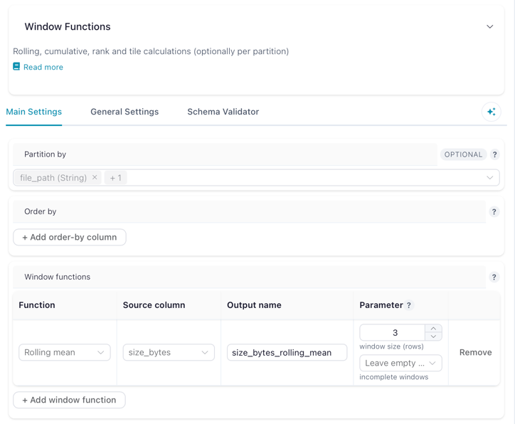

Aggregations
Aggregations collapse or reshape a dataset: totals per group, a crosstab, a running total, a row count. Everything here changes the shape of the table, not just its contents.
| Action | What it does | Lite |
|---|---|---|
| Group by | One row per group, with totals, averages or counts across the rest | ● |
| Pivot data | Turn the values of one column into columns of their own | ● |
| Unpivot data | Turn a set of columns back into rows | ● |
| Count records | Add the total row count as a column | ● |
| Window functions | Rolling, cumulative, rank, tile and partition-aggregate calculations, without collapsing rows |
In Flowfile Lite
Group by, Pivot data, Unpivot data and Count records run in the browser-only Flowfile Lite build. Window functions needs the full desktop or server build.
Group by
Produces one row per combination of the columns you group by, with an aggregation applied to every other column you list.
Settings
| Setting | Description |
|---|---|
| Group By Columns | Columns that define the groups. |
| Aggregations | One row per output column: the source column, the function, and an optional new name. |
| Output Column Name | Custom name for the aggregated result. Optional — defaults to the source column's name. |
Aggregation functions, exactly as the drawer lists them: groupby, sum, max, mean, median, min, count, n_unique, first, last, concat. The average is mean; there is no avg.
Pivot data
Converts long data to wide: each distinct value in the pivot column becomes a column of its own, filled from the value column.
Settings
| Setting | Description |
|---|---|
| Index Columns | Columns that define the rows of the final table. |
| Pivot Column | Its unique values become the new column names. |
| Value Column | The column supplying the values that fill those new columns. |
| Aggregations | Applied when more than one value lands in the same cell. |
Pivot reads the data to discover which columns to create, so unlike most actions it runs eagerly rather than waiting for the rest of the flow.
Unpivot data
The reverse of Pivot: a set of columns collapses into two, one holding the old column name and one holding its value. This is what turns a spreadsheet laid out with a column per month into something you can group and chart.
Settings
| Setting | Description |
|---|---|
| Index Columns | Columns that stay as they are, repeated once per unpivoted row. |
| Value Columns | The columns that collapse into name/value pairs. |
| Data Type Selector | Pick columns by data type instead of by name (for example, every string column). |
| Selection Mode | column to list columns explicitly, data_type to use the selector. |
Count records
Counts the rows and returns that single number in a column named number_of_records. It has no settings.
Window functions
Adds rolling, cumulative, rank, tile or partition-aggregate columns calculated over ordered — and optionally partitioned — rows. Each function you configure produces one new column and every input row survives, which is what separates this from Group by.
Each row under Window functions is one output column: pick the function, the source column, the name to write, and the function's own parameters.

Settings
| Setting | Description |
|---|---|
| Partition by | Optional. Columns that restart each calculation per group. Leave empty to calculate over the whole table. |
| Order by | Column(s) plus direction that define row order within each partition. Required for rolling and tile functions; not used by partition aggregates. |
| Window functions | One or more operations. Each takes a function, a source column, an output column name, and any function-specific parameters. |
Available functions
| Function | Group | Parameters | Output |
|---|---|---|---|
| Rolling sum / mean / min / max / std | Rolling | Window size in rows, and how to handle incomplete windows | Aggregate over a sliding window |
| Cumulative sum / count / min / max | Cumulative | — | Running total, count, min or max up to each row |
| Rank | Ranking | Tie-breaking method: ordinal, dense, min, max or average |
Rank of each row |
| Tile | Ranking | Number of groups | Splits the ordered rows into N equal-sized buckets |
| Mean / sum / min / max / count / std / median | Partition aggregate | — | One value per partition, written to every row of that partition (SQL AVG(x) OVER (PARTITION BY g)) |
For rolling functions, the first rows — where the window is not yet full — can be left null (the default), computed from the partial window, or filled with 0.
Each function needs a unique output column name, and existing columns are always preserved.
Partition aggregates. With Partition by set to region, source column amount, function Mean and output name region_avg, every row gets its region's average alongside its own value:
| region | amount | region_avg |
|---|---|---|
| north | 10 | 20.0 |
| north | 30 | 20.0 |
| south | 5 | 5.0 |
This is the one-node form of a Group by followed by a Join back onto the original rows. From the Python API, df.with_columns(ff.col("amount").mean().over("region").alias("region_avg")) builds this same node.